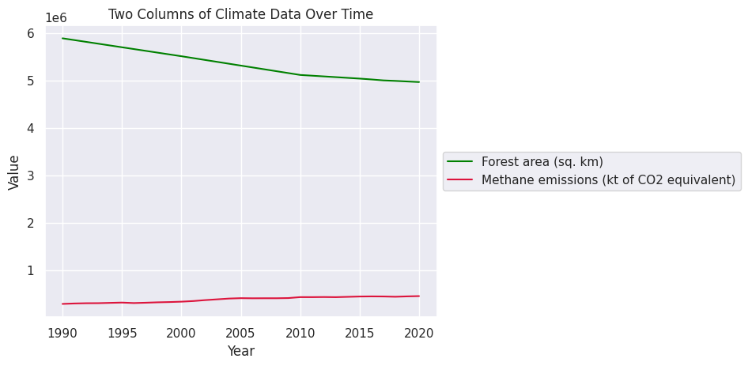

匯入上次整理好的 CSV 約 5 分鐘
先把上一課的資料拿回來：上傳你在第二課存下來的檔案（檔名是 my_brazil_climate_data.csv）。
- 做到這裡時讓老師知道，等老師介紹下一段再繼續。
折線圖 約 20 分鐘
- 折線圖適合呈現什麼目的、什麼類型的資料？你以前在哪裡用過折線圖？
折線圖的 X 軸放時間（年份），Y 軸放你選的欄位，把每一年的點連成一條線，很適合看資料隨時間怎麼變化。把欄位拖到 Y 軸（或按「畫它」）就會畫出來。
依序做：①先把三個欄位各自畫成一張折線圖 → ②把兩個欄位放在同一張圖，加上標題、軸名稱 → ③發現數字大小差太多時，把兩個欄位正規化 → ④把三個欄位都正規化放在一起。左邊的清單會自動打勾。
為什麼要正規化？看一個例子
綠線的數字是幾百萬，紅線只有幾十萬。紅線本來應該是往上升的，但放在同一張圖上幾乎看不出來。差一個數量級就這樣了，差更多會更糟。

正規化（normalize）就是把每一欄的範圍換成 0～1：（數值 − 最小值）÷（最大值 − 最小值）。數字變了，也損失一點精確度，但每一年是升是降的關係不變，就能把不同大小的資料放在一起比較趨勢。
- 和同學分享你的折線圖：一個欄位畫成折線圖，看得出它這幾十年怎麼變嗎？
- 兩個欄位放在同一張圖、數字大小差很多時，會發生什麼事？正規化之後，看到了什麼原本看不到的？
- 做這張圖時，哪個決定最難下？（選哪幾欄、要不要正規化、標題怎麼寫）
散布圖 約 10 分鐘
- 散布圖適合呈現什麼目的、什麼類型的資料？和折線圖有什麼不同？
散布圖的做法和折線圖幾乎一樣，你會發現圖很眼熟，只是每一個點都是分開的，沒有連起來。
依序做：①把三個欄位各自畫成散布圖 → ②這次自己來：把三個欄位正規化，畫成同一張散布圖。
- 和小組分享你的散布圖：同一個欄位畫成散布圖和折線圖，看到的有什麼不一樣？哪一種比較容易看出趨勢？哪一種比較容易發現特別的年份？
- 三個欄位正規化放在同一張散布圖，好讀嗎？點太多的時候，你怎麼讓它比較好讀？（換顏色？少放一欄？）
- 做這張圖時，哪個決定最難下？（選哪一欄、要不要正規化、配什麼顏色）
自訂你的圖表 約 10 分鐘
到目前為止，你的圖都長得差不多：藍灰色背景、白色格線，線條用藍、橘、綠。但配色很重要，它會影響你想說的故事。
- 換背景：有五種背景可以選，有沒有格線、底色是灰是白。
- 換顏色：按欄位標籤上的色塊挑顏色，或在旁邊的小框輸入顏色的英文名稱，例如 crimson、mediumvioletred（顏色名稱清單）。多條線時，每一條可以各自換色。
- 改標題和軸名稱：讓看圖的人一眼就知道這張圖在說什麼。
- 存圖：按圖下方的「存成圖片」。
和同學分享你的發現 約 10 分鐘
討論你們的圖表，分享你從資料裡發現了什麼故事。也聊聊你為什麼做了這些視覺上的選擇：為什麼選這組顏色？你的資料比較適合折線圖還是散布圖？
- 你在彼此的資料中看到哪些模式？這些模式和你預期的一樣嗎？
- 你的圖表讓你對氣候產生了哪些新的問題？
- 你為什麼選這組配色？你比較喜歡折線圖還是散布圖？